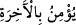

21. Halbuki şeytanın onlar üzerinde hiçbir nüfuzu yoktu. Ancak âhirete inananı,
şüphe içinde kalandan ayırdedip bilelim diye (ona bu fırsatı verdik). Rabbin
gerçekten her şeyi koruyandır.
“Halbuki şeytanın onlar üzerinde hiçbir nüfuzu yoktu.”
“
”, kahr (zorlamak) ve galebe demektir. Kahr ve galebe sahibi olana ‘sultân’
denilmesi de bundandır. Yâni şeytanın vesvese ve azdırmaya çalışmak sûretiyle onlar
üzerinde bir tasallutu ve hâkimiyeti yoktu. Yoksa şeytan kimseye kılıç çekmez ve
değnekle de vurmaz.
“Ancak âhirete inananı, şüphe içinde kalandan ayırdedip bilelim diye (ona bu
fırsatı verdik).”
İlim bir şeyi hakikati ile bilmektir. Allah Teâlâ “âlim” olarak vasfedildiğinde bu,
kendisine hiçbir şey gizli olmayan demektir.
Şek ve şüphe, insana göre zıt iki şeyin dengeli ve eşit olması demektir. Birinci sılanın
(
) fiil cümlesi olarak getirilmesi hudûsü (îmanın sonradan olduğunu), ikinci
sılanın ise isim cümlesi olarak getirilmesi (
) ise devamı (şüphenin devamlı
olduğunu) hissettirmektedir.
Îmâna mukabilinde şüphenin getirilmesi, inkârın en aşağı mertebesinin bile insanı
vartaya/büyük tehlikeye düşüreceğini bildirmek içindir.
Şekkin kuşatıcı yapılması, harf-i cerrinin (
) kendisinin önüne geçirilmesi, “
” “
” harf-i cerri ile müteaddî olduğu halde “ ” harf-i cerrinin getirilmesi mübâlağa için,
şüphenin fazla olduğunu ve bu şüphenin ortadan kalkmasının umulmadığını hissettirmek
amacıyladır. Şüphenin kaynağı başka bir şeye değil de kişinin kendisi olursa bu şüphe
nasıl ortadan kalkar? Durumu böyle olmayan kimsenin ise kurtuluşu umulur.
Mânâ şöyledir: İblis’in onlara musallat olması, ancak bizim ilmimizin âhiret
konusunda şüphe içinde olanları ayırdederek âhirete inananlara taalluk etmesi içindir.
Bu hal ile ilgili bir taalluk olup üzerine cezâ/karşılık terettüb eder. Şu halde Allah’ın
ilmi kadîm, taalluku ise hâdistir. Çünkü şehâdet âleminde mükellefin varlığına bağlıdır.
Öyleyse hiç kimse ‘Allah küfür ehlini ve îman ehlini bilmiyordu. Ancak mü’mini ve
kâfirden ayırt etmek için şeytanı onlara musallat etti.’ diye Allah hakkında sû-i zanda
bulunmasın. Çünkü Allah Teâlâ kudretinin ve hikmetinin kemâli ile inkâr ehlini inkâra,
îman ehlini de îmana istîdadlı yarattı. Nitekim Peygamber Efendimiz (a.s.) şöyle
buyurmuştur: “Allah cenneti yarattı ve ona ehil olanları yarattı. Cehennemi yarattı ve
ona ehil olanları yarattı.”[25] Allah Teâlâ da şöyle buyuruyor: Andolsun biz cinler ve
insanlardan bir çoğunu cehennem için yaratmışızdır.” (el-A’râf, 7/179) Öyleyse
Allah Teâlâ kendilerini yaratmadan cennet ve cehennem ehlinin hâlini bilir. Onları
bulundukları hâl üzere yaratan da O’dur.